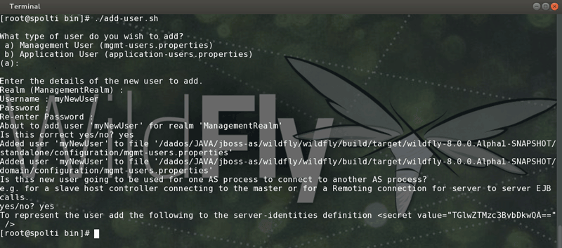

Welcome to WildFly
Your WildFly Application Server is running.
However you have not yet added any users to be able to access the admin console.
To add a new user execute the add-user.sh script within the bin folder of your WildFly installation and enter the requested information.
By default the realm name used by WildFly is "ManagementRealm" this is already selected by default.
After you have added the user follow this link to Try Again.